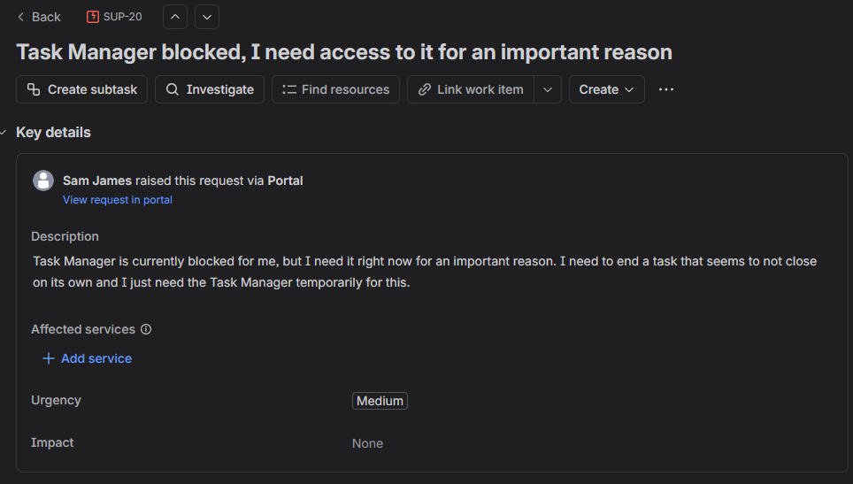
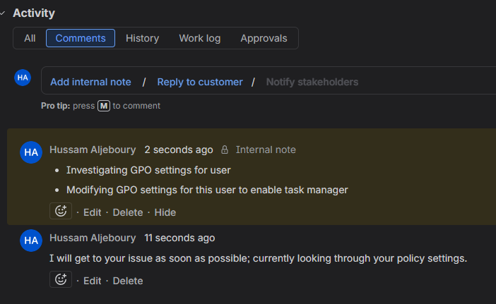
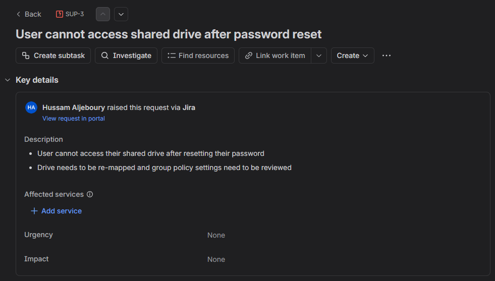
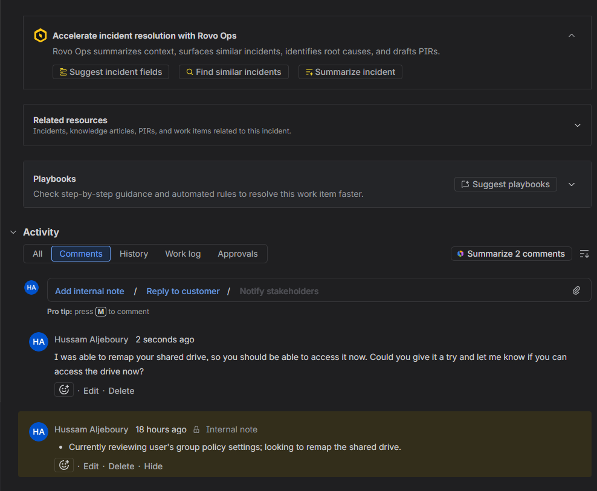
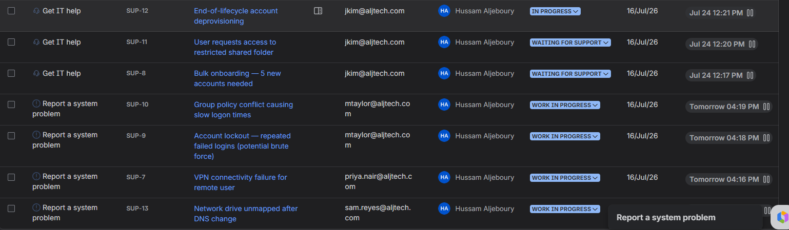
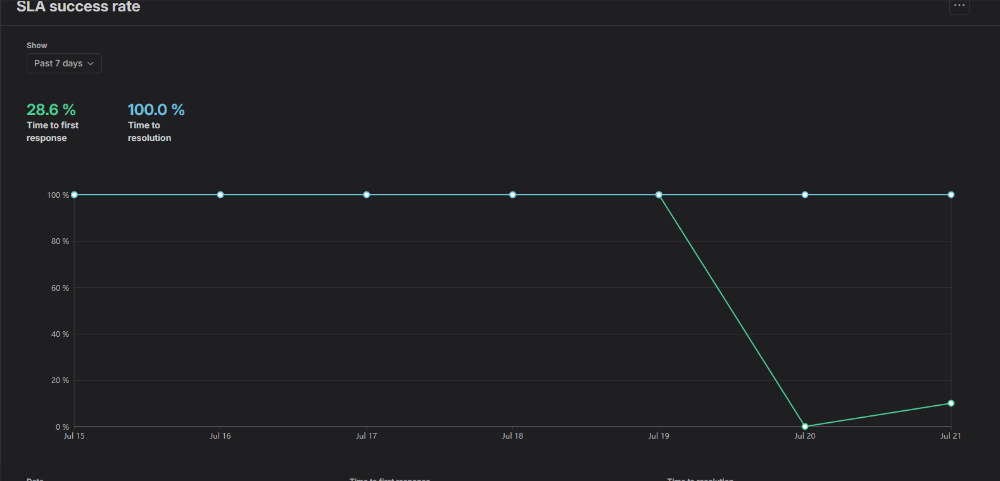
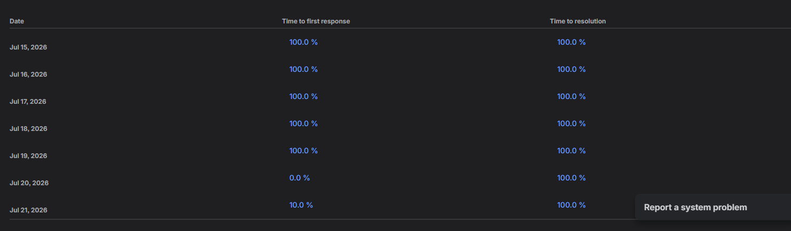

Lab Environment & Setup
- Configured an IT Service Desk project (
SUP) in Jira Service Management using the built-in ITSM template. - Defined request types (Report a system problem, Get IT help) and tiered SLA goals for time-to-first-response and time-to-resolution.
- Added multiple simulated customer accounts across departments (HR, Finance, Sales, IT) so the queue reflects requests from different users rather than a single reporter.
- Worked tickets through the full lifecycle: Open → In Progress → Resolved, using both internal notes and customer-facing replies.
- Submitted at least one ticket directly through the customer-facing Help Center portal to capture the full submission-to-resolution loop.
Scenarios Completed
Scenario 1 — Portal Submission to Resolution (SUP-20)
Objective: Handle a request end-to-end, starting from the customer's own submission through the Help Center portal.
- Customer ("Sam James") submitted a request via the portal: Task Manager was blocked and needed temporary access to end an unresponsive task, flagged as Medium urgency.
- Ticket landed in the agent queue as SUP-20 under "Report a system problem," with full request details and urgency visible to the agent.
- Added an internal note documenting the diagnostic process: investigating and modifying GPO settings for the affected user.
- Replied to the customer directly, acknowledging the issue and setting expectations while the fix was in progress.
Result: Full request lifecycle captured from the customer's initial submission through internal diagnosis and customer communication — mirroring how a real Tier 1 ticket moves from intake to resolution.


Scenario 2 — Shared Drive Access After Password Reset (SUP-3)
Objective: Diagnose and resolve a user's inability to access a shared drive following a password reset.
- Ticket submitted describing the issue: shared drive inaccessible after a recent password reset, with a note that Group Policy settings may need review.
- Logged an internal note tracking the diagnostic path: reviewing the user's Group Policy settings and identifying the drive mapping as the root cause.
- Remapped the shared drive for the affected user.
- Replied to the customer confirming the fix and asking them to verify access on their end.
Result: Drive access restored; ticket moved to Resolved after customer confirmation, with the full diagnostic trail preserved in ticket history.


Queue & SLA Tracking
Tickets were tracked across a live queue spanning multiple request types, priorities, and simulated reporters, with SLA timers visible directly in the queue view and on individual tickets.

The SLA success rate report tracked real performance across resolved tickets rather than a static baseline — including a genuine dip in time-to-first-response on one day where a ticket sat before being triaged, which reinforced the importance of an early acknowledgment reply even before a full fix is in place.


Skills Gained
- End-to-end ticket lifecycle management (Open → In Progress → Resolved)
- SLA configuration and monitoring across priority tiers
- Separating internal diagnostic notes from customer-facing communication
- Customer portal setup and the end-user submission experience
- Queue triage across multiple simulated users and request types
Key Takeaway
This lab reinforced that resolving the technical issue is only half of a help desk ticket — clear internal documentation and timely customer communication are what actually keep a queue healthy. Tracking real SLA data, including the moments it slipped, was more useful than a perfect scorecard would have been.